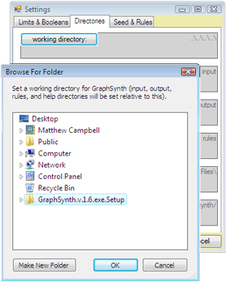

Graphsynth
With GraphSynth, one can design, implement, test, and automatically invoke grammar rules that transform a graph from an initial seed into a creative design.
This project is maintained by DesignEngrLab
- The easiest method is to download the install file (setup.exe). Please choose the one appropriate for your system.Install for 64-bit processor systems.Install for 32-bit processor systems.
- The second approach is to access the source files via CodePlex (graphsynth.codeplex.com). The source files are in Microsoft Visual Studio format and all code is written in C# .If you do not have Visual Studio, you should know that a free C# compiler is available in Microsoft''s Express Editions (in fact much of GraphSynth was written in this version).
- The third way is a web-based Silverlight application will be implemented soon (as soon as I can find some one to do it!)
Other than the main application, there are now plugins that can be included.', NULL, '1'), 4, 4, 'en', 0, 'The following resources are provided to aid you in learning this software. While the software is designed to mimic many functionalities of other software you have likely used, the underlying theory may be new to youTherefore this section is divided into topics relating to software use (USING) and the theory of generative grammars (THEORY).Introductory Tutorial', NULL, '1'), 5, 5, 'en', 0, '
Here is a list of projects that have used GraphSynth:
', NULL, '1'), ('node', 'faq', 0, 7, 7, 'en', 0, 'GraphSynth was created to provide an easy way to create grammar rules that encapsulate design knowledge. The mathematical and computational research in generative grammars had not previously produce usable software that can be leveraged to create meaningful grammar rulesets and automated results. This is the goal of GraphSynth.', NULL, '1'), 8, 8, 'en', 0, '', NULL, '1'), 9, 9, 'en', 0, 'Development started in 2005 and the first useful version was available to my graduate students in Feb. 2006.A slow revision period extended from then until October 7, 2008 (download version 1.9) when it was decided to drop the Netron library written in GDI++ in favor of creating a GraphSynth-specific drawing and display surface, which is now written entirely as a WPF .NET3.5 application.Windows DevelopmentThis website focuses mainly on revisions to GraphSynth 2 for Windows. The current version 2.00.10.xxx still has many things that need to be done. This link focuses on that development.
Mac/Linux Development
Using Mono, we seek to make a compatible version of many of GraphSynth''s features for the Linux and Mac platforms. That development is found here.Web App (Silverlight) Development
Given the current graphics library, it would be possible to run GraphSynth...Python Version
Given the current graphics library, it would be possible to run GraphSynth...', 'Development started in 2005 and the first useful version was available to my graduate students in Feb. 2006.A slow revision period extended from then until October 7, 2008 (download version 1.9) when it was decided to drop the Netron library written in GDI++ in favor of creating a GraphSynth-specific drawing and display surface, which is now written entirely as a WPF .NET3.5 application.Windows Development\r', '1'), 11, 11, 'en', 0, '', NULL, '1'), ('node', 'blog', 0, 12, 12, 'en', 0, 'This is the first post of the a new website. The re-vamp of the site corresponds to the "completion" of GraphSynth v.2. There is much to add, and you can now contribute as well. Please bookmark and/or subscribe to the updates (the orange link under the word syndicate to the right).Happy New Year! I hope 2010 will be a big year for this software.', NULL, '1'), 14, 14, 'en', 0, '
Getting Started with GraphSynth
Installing
First download either the executable version or the source code. If you do not have Visual Studio 2005 installed on your computer (or C# Express Edition) you will need the exe-version. Unzip the folder to an easy to remember location, open it, and double-click the setup.exe file. This should install GraphSynth under your usual list of programs (seems to work fine for XP and Vista; other operating systems are unknown). It will likely appear in a folder under the manufacturer of the software which in this case is our research lab , "UT Automated Design Lab."
Running for the First Time
In either version, running for the first time will produce the following display (to the right).
You must create a configuration file in order to proceed - clicking No will simply exit the program. NOTE: the dialog box will only appear below the welcome screen. I know it''s frustrating but there doesn''t seem to be a way to fix it.
Once you click "Yes", the setting window will appear. Don''t be intimidated by the number of options here. The default values will tend to work fine, and can always be adjusted from the "Settings" entry on the File drop-down (also through Alt+S).
But, before you close this window, you should first get to the Directories tab and set the working directory. The default will likely work if you are using the source code version, but not for the executable versions. Click on the "working directory" button and make your way back to the directory that contains the input, output and rules sub-directories.
Once you set this, then you can save the settings to a file (the default location is perfect) and "Apply in this process" to launch the application. Again, these settings are always available from the File menu.
Now, you''re up and running. But the stark window you''re presented with can be daunting. I recommend opening the rules and seeds discussed in Examples to help get you started.
In order to run a search process or even a manual Recognize→User Choose →Apply process from the Design drop down, you will need to set which graph that is opened is to be your seed, and which rulesets are to be used.NOTE: clicking the "Run Search Process" button will only work for the Swirl example problem.
It implements a Greedy-Search through the search tree for the biggest swirl with 15 nodes. If you are not running the source code then you likely won''t understand this. To date, a complex search (ala Genetic Algorithms, or A*) can only be accomplished by getting your hands dirty with the code.

Finding your way around the source code
So, you''re ready to get your hands dirty, then? Well, welcome aboard. The section at the top of the navigation page will explain a little more what mess of files are in front of you. You probably will want to look at the file called searchProcess.cs under the Application_UI_and_Search project. This includes a Breadth-First Search, a Depth First Search and a Best First Search. I have the program set up so that opening and manipulating files in lower folders (e.g. the MainFormsAndSettings folder) are discouraged. Most research and development can be done by changing only the following source code files:
- searchProcess.cs in the Application_UI_and_Search project.
- EvaluateSwirls.cs in the Evaluation project (or any appropriate evaluation routine for your problem).
- randomChoose.cs/randomChoose.csWithUndo.cs/
RecognizeChooseApply.cs in the Generation project - graphLayout.cs in the Graph Layout project - here you can create custom layout algorithms for your graphs.
- PNPPS.cs in the Guidance project - this is an approach to sorting and truncating lists of candidates, but other sorting or "tournament selection" approaches can/should be placed here.
- inheritedGraphClasses.cs in the Representation project - classes can inherit from node and arc classes and these can be stored here. ', '
- making graphs
- making graph grammar rules, string grammar rules, and shape grammar rules
- testing, creating graph layout mechanisms
- using XML output for interpretation inother code
- searching for and creating new designs (strings, graphs, or shapes)
- making graphs
- making graph grammar rules, string grammar rules, and shape grammar rules
- testing, creating graph layout mechanisms\r', '1'),
Graphs are stored in GraphSynth as designGraph.cs. The “design” keyword is to distinguish it from other types that may be used within larger implementations. For example, in GraphSynth an open source library known as Netron is used for visualization. This compiled project (as a .dll) contains it’s own definition for graph. On opening designGraph.cs (under the 1.Representation folder), we see the following:
public partial class designGraph
public string name;
public List<string> globalLabels;
public List < double > globalVariables;
public List<node> nodes = new List<node>();public List<arc> arcs = new List<arc>();
The graph contains a name, labels (which are any number of strings), and variables (a list of any number of double-real''s). Additionally, there are two lists: one for arcs and one for nodes. This is a “partial” description of the designGraph class, the rest is stored in the XMLandIO directory. The classes for arc and node are also fairly straightforward. Note that each of these contains references to the connecting elements (to and from in arc point to the two nodes connected to the arc; and arcsTo, arcsFrom, and arcs in node reference connecting arcs).
One can freely draw graphs in GraphSynth by clicking File→New→Graph or typing Ctrl+N. A small empty box appears for you to add nodes, arcs and their labels. There are five node shapes. These can be added by right-clicking and scrolling to “Basic Shapes” or by typing Ctrl+1, Ctrl+2, Ctrl+3, Ctrl+4, Ctrl+5, Ctrl+6, or Ctrl+7. Each of these shapes has one or more connection points. By hovering the mouse over a connection point, one and click-and-drag arcs between shapes. By double-clicking an arc or node, or clicking Properties from the right-click menu, one can access various properties of the element.
Figure 1: Creating a new graph in GraphSynth is accomplished by adding new nodes (with right-click or Ctrl+#), dragging arcs into places, and adjusting properties via the Properties Window.
Graphs like all other GraphSynth elements are stored as XML files. These files can be opened in a text editor and altered as well. The example graph in figure one is saved as the following:
Graphs like all other GraphSynth elements are stored as XML files. These files can be opened in a text editor and altered as well. The example graph in figure one is saved as the following:
Inherited Types
Inherited types can be created for nodes and arcs so that applications requiring more descriptive objects for nodes and arcs can be used. Note that in the XML, the second node is qualified by the vertex type. As an example of inherited classes, a basic implementation of vertex and edge are presented in the file, inheritedGeometryClasses.cs. Once these are created and properly compiled in GraphSynth, the classes can be placed in the Properties Window under the nodeType or arcType tags. Additionally, the types can be used in the creation of rules. If a rule is made for vertices and edges it will only be recognized on graphs that contain such classes.
', NULL, '1'),Opening & Saving
Grammar rules are stored in GraphSynth in a similar manner to how graphs are stored. Within the grammarRule class (under the 1.Representation folder) a rule is comprised of the following main fields:
public string name;
public designGraph L;
public designGraph R;
public Boolean spanning;
public Boolean induced;
public Boolean containsAllGlobalLabels;
public List recognizeFunctions;
public List applyFunctions;
public List embeddingRules;The rule contains a simple name and two designGraphs, one representing the left-hand-side, or L (what is used for recognition), and one representing the right-hand-side, or R (what is used for application). It is likely that the rule should have some overlap in the elements that are in L and R. However, these are stored twice as separate elements of both L and R. These elements represent the K or common graph between in the rule and play a crucial role in rule application. This is followed by three Booleans: spanning, induced, containsAllGlobalLabels which are defined as part of the recognition (see Table 1 under Recognition).
Parametric Rule Files
The next two lists represent the names of functions, for C# functions that have been written to add to the recognition or application criteria. These are especially useful in parametric rules—rules that are in some way based on the local variables (stored as doubles) stored in the nodes and arcs of the graph.
When drafting a rule in GraphSynth, one can access many of these rule properties by invoking the properties window (shown to the right). This is the properties window for the rule named seedBurst1Rule4 (seedBurst1Rule4 .xml in the rules directory). It is a fairly simple rule with one Parametric Recognize Function called isALeafNode and one Parametric Apply Function called distributeTo1NewRoot. When this rule was created, a template for these functions were automatically created in the .cs file called seedBurstParamRules.cs. When GraphSynth creates these templates all Parametric Apply Functions will look like the following:
/* This is APPLY for the rule entitled: swirlRule1 */
public designGraph distributeTo1NewRoot(designGraph Lmapping, designGraph host, designGraph Rmapping, double[] parameters)
{
/* here is where the code for the APPLY function
* is to be located. Please modify host (or
* located nodes) with the input from parameters. */
return host;
}This means that one can draft any functions on the resulting host that results after all other rule modifications have occurred (see Application). The Lmapping and Rmapping are needed to identify elements locations within the host. The examples in the rules directory are a good place to start to understand what can be done with this function. The Parametric Recognize Functions are more restrictive. The template for a parametric recognize rule looks like the following:
The Parametric Recognize Functions are more restrictive. The template for a parametric recognize rule looks like the following:
/* This is RECOGNIZE for the rule entitled: */
public double isALeafNode (designGraph L, designGraph host, List<node> locatedNodes, List<arc> locatedArcs)
{
/* here is where the code for the RECOGNIZE function
* is to be located. Please remember that returning
* a positive real (double) is equivalent to a
* constraint violation. Zero and negative numbers
* are feasible. */
return 0.0;
}As the template shows, these functions return a double instead of a Boolean, which may seem to be the more obvious type for whether or not a rule is recognized. Only non-positive-valued real''s will qualify as a successful match. This is to meet with negative null form of constraints used in numerical optimization. Constraints are usually written in the form gi(x) ≤ 0.0 to comply with penalty function and Karush-Kuhn Tucker conditions. Fortunately, understanding the reasons are not necessary for creating meaningful rules. Just remember that a positive number in NOT a match. Example of these rules can be found in the rules directory.
Embedding Rules
As described in Application, there are certain arc modifications that cannot be represented in the L and R graphs. These free-arc embedding rules are stored in a class under Representation called embeddingRule.cs. When drafting a rule one can specify in the Properties Window (as shown above) how many embedding rules to create for the rule. However, the actual drafting of embedding rule values must be done in XML. Once the rule is saved and opened in an XML editor one will see the following line added to the file:
<embeddingRules>
<embeddingRule>
<freeArcLabel />
<LNodeName />
<neighborNodeLabel />
<RNodeName />
<originalDirection>0</originalDirection>
<newDirection>0</newDirection>
<allowArcDuplication>false</allowArcDuplication>
</embeddingRule>
</embeddingRules>This means that for the list of embedding rules (</embeddingRules>), there is one free-arc embedding rule (</embeddingRule>) with the following properties. The only field that must be filled in this rule is the RNodeName since that specifies what new node (following the node produced from the Rmapping) are the free-arcs to be connected to. Any number of rules may be created and rules may have many of the same values. Be careful though, the modifications performed by embedding rules are hard to debug!
', NULL, '1'); INSERT INTO `field_data_body` (`entity_type`, `bundle`, `deleted`, `entity_id`, `revision_id`, `language`, `delta`, `body_value`, `body_summary`, `body_format`) VALUES 6, 46, 'en', 0, 'The act of recognizing when a rule can be applied is to identify a subgraph within the host that matches with the graph depicted as the left hand side of the rule (as shown in Figure 1). Within a label rich system, the number of possible subgraphs reduces drastically. The labels within both the graph L and graph H in Figure 1 constrain the recognition to a single subgraph (node 2 and arc 10). However, if all of the labels are removed in L, then there are 16 possible subgraphs. The corollary that is adopted here is that the act of matching a node or arc to one in the host is that the labels must be a subset. In the case of Figure 1, the subgraph is recognized even though the matching location contains more labels than L.
Figure 1: The recognition requires that we find the subgraph of the left hand side (a) of the rule within the host (b). In this example, nodes and arcs are referred to by the corresponding number, and labels for nodes and arcs are shown in parentheses.
Subgraph Booleans
For creative systems, rules are likely constructed to model or contain particular heuristics or design rules. A label rich recognition like this can be interpreted as, “if a state of the design contains all the characteristics of a particular rule, then that rule is applicable.” However, there are cases when rules may not be easily represented by subsets of labels. It is for this reason that we additionally equip each node and arc within the left hand side graphs with a Boolean, containsAllLocalLabels. If this Boolean is set to true then we enforce that the set of labels must be identical in both rule and host. In this case, the rule shown in Figure 1 will not be recognized within the host. If all the labels were removed in the L graph, we would find only one location (node 5 and arc 14) as opposed to the 16 discussed above.
It is clear from this example that by setting the label matching as “equal to” as opposed to subset, the number of recognized location reduces significantly. In addition to this restriction, there are number of additional Booleans that can be implemented to better capture the intended rule recognitions. For each node, one can limit the number of arcs that are connected to it. In our implementation, a Boolean called strictDegreeMatch is created. This essentially means that a node in a rule’s L will match only with a node in the host that has the same number of arcs connecting to it. In the preceding example of Figure 1 with the labels removed from L and the strictDegreeMatch set to true, there are only two locations that are properly matched (node 1 and arc 8, and node 6 and arc 12).
For the arc we can provide an additional criteria on the direction of the arc with the Boolean, directionIsEqual. When this is set to false, we assume that undirected arcs can be matched with directed arcs or doubly-directed arcs in the host. When set to true, the Boolean limits matching undirected only with undirected, directed only with other directed with the same sense, and doubly-directed with doubly-directed. An additional Boolean related to arcs deals with handling the dangling nature of arcs. The L in Figure 1, only includes a single node and arc; however, many approaches to graph theory disallow arcs from having an unspecified or dangling end. In the development of the methodology and implementation presented here, both cases are handled. In the examples that have played out from Figure 3, the missing node at the bottom of L is treated as a wildcard that matches with any node regardless of its characteristics. If one creates a rule that seeks to match an arc to a similar dangling arcs in the host, then the Boolean, nullMeansNull can be set to true for the arc. This prevent this from matching with arcs that are defined between two nodes. In the example, this Boolean set to true would again prevent the rule from recognizing a legitimate subgraph with the host.
Finally, the subgraph recognition ambiguities can result in the graph-wide Booleans, induced and spanning.. A spanning subgraph is one that contains all the nodes of the host graph but not necessarily all the arcs. Clearly, this results in no recognition in the previous example. When the induced Boolean is set to true the subgraph is required to be an induced subgraph within the host. This means that L must contain all arcs that exist between the recognized nodes in the host. These subgraph Booleans are commonly accepted as fundamental to graph theory. Graphs can also have labels similar to those in the nodes and arcs. As a result, we create a final Boolean that relates to the global labels being a proper subset or equivalent to those in the host. A final summary of these subgraph Booleans are shown in Table 1. While some of these have existed before in past graph theory literature, we have expanded the set to include all possible ambiguities in what is meant by subgraph. Since a graph can be defined in category theory as an interacting set of sets (e.g. set of labels, sets of arcs, and sets of nodes) the Booleans allow us to independently define how the subsets are determined for each of these components.
Table 1: A summary of the subgraph Booleans
Subgraph Boolean
Applies to what aspect of rule
when TRUE…
spanning
graph
host contains an equivalent set of nodes as L
induced
graph
host contains an equivalent set of arcs as L for the recognized set of nodes
containsAllGlobalLabels
graph
host contains an equivalent set of global labels as L
strictDegreeMatch
node
host node contains an equivalent set of arcs connected to it as L node (nodes have same degree)
containsAllLocalLabels
node
host node contains an equivalent set of labels as L node
containsAllLocalLabels
arc
host arc contains an equivalent set of labels as L arc
directionIsEqual
arc
host arc has equivalent direction characteristics as L arc
nullMeansNull
arc
host arc must be equivalently unconnected at ends as the L arc
Recognition Procedure
On the most general level this recognition takes two inputs: the L of a rule, and the host graph. What is expected as a result is a list of subgraphs where L is found in the host. For a particular rule and host, there may be no subgraph, one subgraph, or many subgraphs. These resulting subgraphs are often referred to as how L is mapped into the host. This becomes an important consideration for the application of a rule.
The approach developed in our implementation is a recursive search starting with a single node in L. The first node in L is checked to see if it matches with each of the nodes in the host. For those in which it is a successful match, a modified depth-first-search (DFS) is invoked from each matching node within the host. As creators of the grammar rules, one can impact the efficiency of the recognition process by altering the order in which the nodes are presented. The computational structure for a graph stores the set of nodes as a list; by placing the most restrictive node (the node that is hardest to match) first in the list of nodes one can eliminate wasted search that would occur if a less restricted node is presented first. An example of this is shown in Figure 2. The node I in L is more restrictive than node III and the order of expansion is shown in Figure 2a and b. The depth-first-search proves to be a more efficient approach to recognition both in computational speed and memory.
An additional item to note in these mappings is that locations including the same nodes and arcs are found multiple times. This is because our recognize-choose-apply requires that we uniquely match each node and arc to one in the host. This becomes more apparent in the discussion of rule application since the rule essentially includes individual instructions for each of the elements matched to the L graph.
', 'The act of recognizing when a rule can be applied is to identify a subgraph within the host that matches with the graph depicted as the left hand side of the rule (as shown in Figure 1). Within a label rich system, the number of possible subgraphs reduces drastically. The labels within both the graph L and graph H in Figure 1 constrain the recognition to a single subgraph (node 2 and arc 10). However, if all of the labels are removed in L, then there are 16 possible subgraphs. The corollary that is adopted here is that \r', '1'), 7, 47, 'en', 0, 'Over the past thirty years, two separate fundamental approaches to graph application have been derived. The two approaches have been distinguished from one another as: algebraic versus algorithmic, gluing versus connecting, or context-sensitive versus context-free and both have been incorporated into GraphSynth. Figure 1 shows an overall flowchart for this application procedure. This flowchart captures in a rigorous way all graph transformations that may occur; addition, subtraction, or modification to nodes, arcs, and labels. The thick dotted line in the figure shows the algorithmic path of the application procedure while the long ‘U’ shaped lines indicate subgraph distinctions, where A Ì B indicates that A is a subgraph of B. The input to application includes the three items on the left of Figure 1. The rule and the L-mapping (or locations) are the result of the previous choose function that results from recognition (see Generation for description). These along with the host graph, G, represent the first elements of what is commonly referred to as the Double-Pushout method, which is discussed in detail in the following subsection. Following the pushout that removes elements from the host (Step 1 in Figure 1); a second pushout adds new elements to the graph (Step 2 in Figure 1). This concludes the traditional algebraic approach to graph transformation; however, for completeness, a third step is implemented to accomplish Free-Arc Embedding of possible dangling arcs. This third step (Step 3 in Figure 1), based on a previous approach referred to as edge-directed Neighborhood Controlled Embedding, is improved upon in the implementation of GraphSynth. It is described in more detail below.
Figure 1: The application of a graph grammar rule takes as input: a rule to apply,
how that rule’s L is mapped into the host, and the host graph.The Algebraic Double Pushout Method
In general, the description of grammar rules contains some overlap in the two graphs L and R. This overlap is referred to as K, and indicates what parts of the L-mapping are to be kept through the rule application. Any elements (nodes, arcs, or labels therein) that are to be deleted in this rule transformation are therefore stored in L but not in K. One could view the DPO method as a function:
H=G – (L – R) + (R – L)
where the parts of L that are not in R are first deleted (L-R), followed by the addition of elements in R but not in L (R-L). This method of adding elements via graph transformation is sometimes referred to as the ‘gluing’ method or the context-sensitive method given this approach at adding new elements to a host. One final change that can be made in this part of application is to modify the labels in the K elements. This modification happens in a similar way to the overall rule operation but is applied on a set as opposed to a graph. Within each element in K, we identify the labels that exist when in L that are no longer stated when in R and delete them. This is then followed by adding the new labels that are in R but not in L; the common labels are left alone. In terms of implementation, we represent L and R as independent graphs. As such there is no true intersection graph K that results. What is done to represent the K elements is to require that arcs and nodes with identical ‘names’ in L and R are the same element, when the user constructs a rule. This name tag is separate from labels which are used to describe qualities in the graph. Name is an implementation fix to storing K elements in two separate instances. As a result, the aforementioned modification of K labels can be easily performed. An example DPO rule application is shown below in Figure 2.
Figure 2: An example of a DPO rule application. First elements are deleted followed by the addition of new elements.The Algorithmic Free-Arc Embedding
The second approach to graph application is often referred to as the ‘algorithmic approach’ or the ‘connecting approach.’ In many instances the two approaches are able to perform identical graph modifications, and in general the DPO method is preferred for its ease of representing graph modifications by simple graph subtractions and additions. The algorithmic method is ‘context-free’ which on a low-level relates to the lack of the common or context graph, K, but on a higher-level this means that the rules can be applied in more generic way. Consider the example in Figure 2. The three nodes of the left hand side, L, are removed leaving two dangling arcs and are replaced by two new nodes and a single connecting arc. The two dangling arcs are then connected following a condition that informs the transformation process of where these arcs are connected.

Figure 3: An example of free arc embedding. The embedding rule specifies only an RNodeName, causing all free arcs to be connected to node III.The approach used in GraphSynth is referred to as Free Arc Embedding and takes advantage of our ability to handle dangling arcs. Following the algebraic approach (see Figure 1), we gather the dangling arcs that were connected to the nodes deleted in the first part of DPO and check them with specific embedding conditions of the form:
if free arc ((contains label, freeArcLabel)
AND (was previously connected to the deleted node matched
with the L node, LNodeName)
AND (is currently attached to a neighbor node with label,
neighborNodeLabel))
AND (is in the direction of originalDirection))
then (connect to node, RNodeName in the direction of
newDirection).The representation of embedding rules is accomplished by simply saving the these variables within a grammar rule. Any of the first four elements of this rule representation may be left blank to specify that the rule is not concerned about a particular quality. This embedding method differs from previous by reconnecting the free arcs as opposed to creating new arcs. An addition of a seventh quality, allowDuplication gives the approach the ability to create more arcs than what is originally contained in the host. Additionally, if none of the first four qualities of the rule are specified, then the rule will be matched to all free arcs (this is seen in the example of Figure 2). Any free arcs that meet no conditional rules are deleted as a final step in creating the new host, H''.
It is important to note that the order of the rules is important. Any combination of embedding rules can be used to identify a free arc. If two rules are recognized with the same free arc only the first one will modify it, as the arc will no longer be ‘free’ after the rule is applied; however, in cases when allowDuplication is set to true, a copy of the free arc will remain for the other rules to operate on. As a result, when a rule duplicates an arc in this way, it does not prevent further rules from being recognizing the free arc.
', NULL, '1'), 8, 48, 'en', 0, 'Grammar rules are organized into sets, simply called rule sets. These are stored in compact XML files that contain references to each of the grammar rules in the set. All of the details of the rule set can be configured through GraphSynth’s ruleSetDisplay — there is no need to open a ruleset’s XML in an editor (I have only ever done it out of curiosity!).
The top of the pane is a list of the rules added to set. Any number of rules may be added to a rule set by clicking the add rule button. Once rules are in the set their order can be rearranged or they can be subsequently deleted. Along the bottom are three buttons that indicates what to do with the checked rules listed above. The checked rules are deleted by the “del” button, or moved up or down (“dn”) in the list.
Following the list of rules is a list of important rule set properties. Similar to graphs and grammar rules the name will simply be inherited from the filename, and is not internally used within GraphSynth. The next is a property called “triggerRule #.” A trigger rule is one that when invoked during the generation process causes a particular action to occur. Currently, only one triggerRule can be set per rule set. If there is no intention to use the trigger rule, then the item should be set to –1. The triggerRule # corresponds to the rule # shown in the top pane.
The next seven properties deal with how the rule set behaves during Generation (It is recommended that this section is well understood before proceeding with this description). The “choiceMethod” is set to either Automatic or Design. An automatic rule set is one that will invoke the rule once it is recognized. This is the case in the example to the right (the example seedBurstRuleSet in the rules directory). When a rule set is set to Automatic, the random tests and user choose tests under the design drop down will not function. This is because the rules fire immediately, skipping the choose part of the generation cycle. Given the methodical approach followed by recognize, we will get the same resulting graph every time with an Automatic ruleset. It will first look for valid locations of the first rule and searching in the host from the first listed nodes on down. This continues for the remaining rules. The important thing to note in automatic rule sets is that latter rules will not be invoked unless all previous rules were unrecognized. This is illustrated well in the seedBurst example. Alternatively, if one knows that their rule set is confluent, then an automatic rule set will work as expected.
“Interim Candidates are” & “Final Candidates are” are properties developed to support latter automated searching of graphs. Often grammars rule sets are created so that only after all rules are invoked is a feasible solution achieved. For such rule sets, we would indicate that Interim Candidates are Developing and Final Candidates are Feasible—as is the case for the seedBurst example shown above. However, in other examples such as the fun swirlSeed example. We set both to Feasible. Users may want to create choosing methods that check these qualities to know if a candidate is complete and subsequent rules are simply modifying it, or if the candidate is Developing towards a Feasible candidate.
The next five properties correspond to the five ways that the Recognize→Choose→Apply generation cycle may end (see Generation). These each can be set to one of the five actions:
Stop : simply end the generation process,
Loop : restart Recognize→Choose→Apply,
GoToPrevious : go to the previous rule set stored in the array Program.rulesets[],
GoToNext : go to the next rule set,
GoToRuleSet#n : go to rule set #n.As a result of setting these five properties to any of these five actions, we can greatly control how the rule sets execute. Note that there may be any number of rule sets within a particular synthesis of a graph. We have noticed on several occasions that grammar rule are stored in sets that perform different actions within the overall synthesis. An example of multiple rule sets can be found in the Routes example (RouteGetToSpanningRuleSet.xml and RouteGetToCompleteRuleSet.xml in the rules directory). After the first rule set has run out of rules, then we know that we have created a spanning tree of the nodes in the seed graph (citiesDefaultSeedGraph.xml). Since “NoRules” is set to GoToNext, the next rule set is invoked to add additional routes between the cities.
Finally, the rule set has properties that list the filenames for recognize or apply parametric functions. These need to be established prior to creating templates for functions in the grammar rule property window. As is shown in the examples, a “.cs” file has been created for each ruleset. Each of these files contains all the functions used by that ruleset. This is not enforced by GraphSynth though. One may have multiple “.cs” files for a ruleset or multiple rulesets referencing the same source file.
Note: Because rule sets are stored in a fixed array
', NULL, '1'), 9, 49, 'en', 0, '
(Program.rulesets[]), please specify the number in advance in the settings (GraphSynthSettings.config).We consider the seed graph, the grammar rules and the rule sets to provide the designer with the Representation for a particular problem domain. On top of this representation, GraphSynth provides us the basic framework to generate candidate solutions through a recognize, choose and apply cycle shown here.
Figure 1: Throughout a recognize, choose, and apply generation process, any of five things may happen. In order to plan accordingly a rule set should include instructions for how to handle each of these possible exits.The code for this particular generation function is found in the 2.Generation directory under the filename RecognizeChooseApply.cs. This is actually an abstract class and cannot be invoked directly, as a result on must produce an inherited class to use this function. Two such inherited classes are shown in that same directory: chooseViaHumanGui.cs and randomChoose.cs. Mainly these inherited classes answer a difficult question of graph synthesis: how or who will make the decisions to synthesize new graphs?
Once an inherited class is established, a creation of that class (constructor) will be required to populate the fields of the recognize, choose, and apply process. These fields are:
int[] maxNumOfCalls : the number of calls or cycles specified for each rule set. This is an array of length specified by the number of rule sets.
If it is not set, the value of maxRulesToApply will be used.candidate seed : Often the same seed is used as a starting point with the generation process. That seed is stored here as a global field of the class.
ruleSet[] rulesets : The ruleSet array used to perform the generation process is stored here.
Boolean display : A simple Boolean used for debugging or interactive generation. If true then the host will be re-plotted after each apply action.
After the creation of the generation methods, one can invoke the generation by calling one of the existing RecognizeChooseApply.cs invoked functions:
public candidate generateOneCandidate()
public void runGUIOrRandomTest()
public candidate[] GenerateArrayOfCandidates(int
numToCandidates)
public List<candidate> GenerateListOfCandidates(int
numToCandidates)or by writing your own invoking function in the derived class (see example at bottom of randomChoose.cs).
', NULL, '1'), 50, 50, 'en', 0, 'The Design drop down menu in GraphSynth provides functions to test and synthesize new graphs from the grammar rule sets described in earlier pages (graphs, grammars, rule sets). Firstly, the pane has commands to set the active seed and the first three active rule sets. These can also be set in the GraphSynthSettings.config file, through the settings drop-down under File, so that they areestablished on beginning the program (this proves to be a great time-saver!). The GUI will only allow one to assign the first three rule sets; however, if you want more, you will need to make the assignments in GraphSynthSettings.config or even during Program.runSearchProcess().
This is followed by the “Run Search Process” item, which is the main entry point for a search process that one may implement (more on this in a second). The bottom three items allow for the testing or rules, rule sets, and seeds. The “Recognize→User Choose→Apply” item invokes a dialog to choose the rules by hand. Within the options presented in that dialog, one can double-click a location to see what subgraph the rule is applying to. The “Recognize→Random Choose→Apply” item will continuously call random options on the seed until the process stops (stops by encountering a “Stop” in one of the 5 generation exits). Additionally the gray box that is labeled “#steps” can be changed to a set a integers that will be assigned to the generation cycle limits for each rule set (see int[] maxNumOfCalls). For example by replacing “#steps” with “4, 5 12”, the generation process will be invoked with set maxNumOfCalls to [4, 5, 12] (most common separators such as comma and space can be used).
Search Process Controller
When any of these lower items are clicked, a small controller window appears (often it is hidden for user and random testing). The controller allows one to change how the search process is executing. The snapshot to the right was taken while the process was executing. Notice that the “Play” button is disabled since the process is already in operation. The process can be paused, stopped , or aborted from this point. Pressing the “Stop” button will send a request to the process. This is to allow the process to end and still retain useful results. It will not always function if the search process is using the computational resources elsewhere. Thus as a last resort, the “Abort” button will attempt to kill the thread that the search process is running on.
Figure 2: The Search Process Controller allows on to dynamically control aspects of the search process. It is inspired by the transport bar of computer music applications.In addition to these button, there are three displays that show pertinent information about the process. The time is implemented as part of the controller; it ‘pings’ the thread the search process is on in specific intervals. The rate at which it pings is based on the verbosity setting (described below). The top two displays shown the iterations and a miscellaneous field. These are set in the search process by setting the iteration and miscObject properties of the main Program.cs. At the bottom one can set the priority and verbosity for the search process. The computational processes in GraphSynth run on separate threads, and a thread can be given a priority over other threads. Set this high if you want to speed up the process but do not mind it slowly down other processes including the main thread (thus making GraphSynth appear as if it has locked up!). The verbosity is a highly useful UI that allows the user to adjust how much text is being output by the process. One is encouraged to implement many SearchIO.output statements in a search process to provide information about the progress of a long operation. However, such commands can greatly slow down the processing. By dynamically setting how verbose we want the search process to be, we can get the information we want when we need it.
The SearchIO.output function can be invoked with an object (usually a string) to print and a verbosity limit, which is an integer from 0 to 4. If the verbosity limit is set to 0, then the object will be printed all the time even for verbosity set to “lowest.” If it is set to 4, then it will only print when verbosity is set to “highest.”
Writing a Custom Search Process

Figure 3: The Representation is accomplished by the seed, and rule set; and the Generation by the R→C→A cycle. What remains in the search process is some method to evaluate the quality of candidate graphs (classes and functions to be stored in Evaluation), and methods to learn from these results to improve the next generation (classes and functions to be stored in Guidance).As discussed in the introduction, one may want to automate the creation of candidate solutions. This custom code can be written in under the function Program.runSearchProcess() in the file searchProcess.cs. In fact, any C# code can be written here. One may want to invoke functions or classes from another Visual Studio project, or invoke additionally GUI forms. In the example code, the swirl seed and rule set are loaded (which encapsulates the representation) , and we create the generate, evaluate and guide methods for the search process:
Generation.randomChoose GenerationApproach
= new Generation.randomChoose
(Program.seed, Program.rulesets,
new int[1] { 50 }, false);
Evaluation.EvaluateSwirls EvaluationApproach
= new Evaluation.EvaluateSwirls(); Guidance.DoNothingButDisplay GuidanceApproach
= newGuidance.DoNothingButDisplay();The initiation of these routines is done at the begin-
ning of the process in an attempt to make GraphSynth
modular for a wide range of applications. Throughout the
search process, one can take advantage of a number of fields
in the Program and SearchIO cclasses. These are listed below for your reference:Program.settings : The class globalSettings is in the Application_UI_and_Search directory. These values are loaded in from the GraphSynthSettings.config file.
Program.mainForm : this is the reference to the mainForm - the top/largest GraphSynth Window. It may be difficult to reference objects from a search process, as Visual Studio will view this as a cross threading operation (which apparently is a bad thing. See the SafeInvokeHelper class in Represenation→XMLandIO for a solution)
Program.seed : This is the seed graph (of class designGraph) indicated by the "Set Active as Seed" drop-down on the Design menu item or through the settings. It represents the top of the search tree.
Program.rulesets : An array of class ruleSet of length Program.settings.numOfRuleSets. These can be set in the same manner as Program.seed.
(The following can be called from either static class SearchIO or Program. Anything written in the searchProcess.cs file will likely already be in the Program class and the property may be reached without specifying the class. However, if you are in another project (i.e. within Evaluate) you will need to use SearchIO prefix, as you will not be able to see the Program class.)
SearchIO.output or Program.output : Use the various overloads of this statement to print messages to the sidebar text in the main form of GraphSynth. While a verbosityLimit is not mandatory, it is a "nice to have", take the time to put something here.
SearchIO.processNum or Program.processNum : A read-only integer that simply lists what search process one is currently on. Not really that useful, during search process. The integer simply increments for each new search started in a single run of GraphSynth.
SearchIO.terminateRequest or Program.terminateRequest : A read-only Boolean that indicates true when the user has clicked the stop button on the SearchProcessController.
SearchIO.timeInterval or Program.timeInterval : A read-only TimeSpan (a fundamental C# class)object that indicates how long the search has been going on.
SearchIO.iteration or Program.iteration : The number of iterations that have occured in the process. It can be read or set using this. The SearchProcessController will reflect the value in the first box. NOTE: Setting this value through Program.iteration causes an immediate update of the SearchProcessController. This is either a good thing or a bad thing. You will see immediately when the iteration changes, but if it is happening a lot then it may slow down your process.
SearchIO.miscObject or Program.miscObject: Any object that the researcher wants to store. It will be converted to a string and shown in the SearchProcessController. NOTE: Setting this value through Program.miscObject causes an immediate update of the SearchProcessController. This is either a good thing or a bad thing. You will see immediately when the iteration changes, but if it is happening a lot then it may slow down your process.', NULL, '1'); INSERT INTO `field_data_body` (`entity_type`, `bundle`, `deleted`, `entity_id`, `revision_id`, `language`, `delta`, `body_value`, `body_summary`, `body_format`) VALUES 51, 51, 'en', 0, 'File Directory Navigation (folders in italics)
- GraphSynth 1.7
- input (directory for seed graphs)
- output (results saved here from search process)
- rules (rules and rule sets saved here)
- GraphSynthFiles (main code)
- Application_UI_and_Search - This is the project (GraphSynth.csproj) that is the main .exe of GraphSynth. All other folders compile to dynamic libraries (*.DLL). Consider altering on the searchProcess.cs file, which includes the one function that is invoked from the "Run Search Process" function from the Design pull-down. Versions of this have been written to perform blind search, and best first search (both included here) as well as genetic algorithms and new tree search methods.
- Resources (includes pictures, these help files, and the Netron Graphics Library)
- bin, obj, and Properties (directories created by Visual Studio, the executable, GraphSynth.exe, and the settings file, GraphSynthSettings.config are found in bin\\Release\\)
- Representation - includes grammarRule.cs, designGraph.cs, node.cs, arc.cs, etc. It is recommended that developers only alter inheritedGraphClasses.cs with details on how the node, arc, and designGraph classes are to be altered for the application.)
- Generation - Includes RecognizeChooseApply.cs, randomChoose.cs, and randomChooseWithUndo.cs. One may wish to make more intelligent "Generation" methods here.
- Evaluation - a placeholder for evaluation methods; includes EvaluateSwirls.cs. Place methods and classes here to measure the worth of design created through GraphSynth.
- Guidance - a placeholder for guidance methods; includes the optimistic but useless GetToOptimum.cs. Developers are encouraged to write their own to be invoked from the aforementioned searchProcess.cs.
- GraphLayout - includes a single class/file called graphLayout.cs which allows developers to create specific graph layout algorithms within GraphSynth (see file for more details). The folder entitled DefaultAlgorithms contains the six predefined algorithms.
Drop-Down Menu Navigation
File
- New
- Graph (Ctrl+N)
- Grammar Rule (Ctrl+Shift+N)
- Rule Set (Alt+N)
- Open (Ctrl+O)
- Save Active (Ctrl+S)
- Close
- Active Window (Ctrl+W)
- All Open Graphs (Ctrl+Shift+W)
- Print
- Print Preview (Ctrl+P)
- Exit (Alt+X)
Open a new window to create a new graph, rule, or ruleset (set of rules). In drawing a graph or rule, a right click will bring up a context-sensitve menu, and Ctrl+1, 2, 3, 4, or 5 will add different node shapes.
Open and save graphs, rules, or rulesets. "Active" refers to the active window in GraphSynth.
Close the active window, or all open graphs. This can be handy when running a long generation process.
Modify the settings to save time in GraphSynth.
A print command is useful to save the graph. It will only send to the default printer. Please set up in advance.Edit
- Force Update & Refresh
- Cut (Ctrl+X)
- Copy (Ctrl+C)
- Paste (Ctrl+V)
- Delete (Del)
- Select All (Ctrl+A)
- adding nodes (not shown)
- largeCircleNode (Ctrl+1)
- medCircleNode (Ctrl+2)
- smallCircleNode (Ctrl+3)
- ovalNode (Ctrl+4)
- roundtangleNode (Ctrl+5)
- rectangleNode (Ctrl+6)
- squareNode (Ctrl+7)
force update and refresh to tie display to xml data. Hopefully it is not necessary to do this manually, but here it is just in case.
Cut, Copy, Paste, Delete, Select All - edit functions like you''re used to.
Nodes can be added to graphs or rules by these helpful shortcuts. They can also be added by right-clicking and selecting them from the bottom of the pop-up menu.View
- Zoom
- 10% to 400%
- (Ctrl+Z - zoom in)
- (Alt+Z - zoom out)
- (Ctrl+Shift+Z
- zoom to 100%)
- Text (Ctrl+T to reset)
- Hide (Ctrl+H)
- Shrink Text (Ctrl+F)
- Enlarge Text (Ctrl+G)
- Graph Layout
- Randomizer (Alt+1)
- Force-Directed (Alt+2)
- Fruchterman-Reingold Algorithm (Alt+3)
- Cartesian Layout (Alt+4)
- Balloon Tree (Alt+5)
- Radial Tree (Alt+6)
- Custom 1 Layout(Alt+7)
- Custom 2 Layout(Alt+8)
- Custom 3 Layout(Alt+9)
- Undo Last Layout (Alt+0)
- Windows
- Cascade
- Tile Horizontally
- Tile Vertically
Set a zoom for the current graph or rule. Within a rule, click on either the left-hand-side or the right-hand-side to apply the zoom.
Node and arc names can busy up a graph. Quickly hide them or shrink them with these commands. Also when zoomed out, the enlarge text is useful. The three shortcuts are adjacent, so feel free to adjust randomly.
Here are three generic layout algorithms and (up to) three custom layout algorithms that you can write in the graphLayout.cs file. The actual names of the functions will be shown here.
Manage multiple docked windows with these handy windows layout methods.Design
- Set Active as Seed (Alt+D)
- Set Active as Rule Set #0 (Alt+0)
- Set Active as Rule Set #1 (Alt+1)
- ...
- Set Active as Rule Set #9 (Alt+9)
- Clear All Rule Sets and Seed
- Run Search Process (Ctrl+Spacebar)
- Recognize→User Choose →Apply (Ctrl+U)
- Recognize→Random Choose →Apply (Ctrl+R)
- #steps (for Random Choose)
Before a generation process can be initiated, we must specify the seed graph and the rulesets. This is best done by fixing the settings so that the seed and rulesets are loaded at the beginning of the program. But if this is not done, then we can use active windows in GraphSynth to set this up.
The seed can only be applied to a graph, and it is possible to set as many as 10 active rule sets. The number of items that appears depends on what put in "# of RuleSets" in settings. These can be changed dynamically. Finally, we can clear all the prescribed rulesets and seeds with this final command.
This simply invokes the custom search process that you is contained in searchProcess.cs.
To test the generation with a pop-up showing the list of option, call this function.
Invoking this will randomly call options until the process ends. Beware, in many cases, there is no end, unless no more rules are recognized or the cycle limit is reached ("Max # of Rules to Apply in the settings dialog). To invoke the random process for a fixed set of rule call, fill in values in the #steps box. Note: you need a limit for each rule set. Separate values with a space or comma.Help
- Help (F1)
- About GraphSynth
The help menu item simply opens a browser to this series of pages (sorry, that''s all folks!)
Click on the "About GraphSynth" tab to see the splash and get to links to our site.Four examples are provided in the GraphSynth download, and more will be available soon for more complicated (albeit mechanical engineering) applications.
Swirl
Files:
input/swirlSeed1.xml
rules/swirlRuleSet.xml
rules/swirlRule1.xml rules/swirlVertices.cs
output/candidate00#.xml
Swirl is a simple 1 rule system. That makes counter-clockwise patterns from either end of a simple seed. The magic of this is found primarily in the parametric rule application that updates the position of vertices (not nodes! this is also an example of how inherited classes can be used) by increasing the edge slope and the edge length.Loop
Files:
input/loopSeed1.xml
rules/loopExampleRuleSet.xml
rules/loopRule1.xml output/looped.xml
Loop is also a 1 rule system. The rule expands an existing loop and wreaks havoc on the direction of the arcs. This example is mainly to show the use of embedding rules. Note that this works despite the lack of commonality between the left and right hand sides of the rule.SeedBurst
Files:
input/seedBurst1.xml
rules/seedBurst5rule1.xml
rules/seedBurst3rule2.xml
rules/seedBurst2rule3.xml
rules/seedBurst1rule4.xml
rules/seedBurstRuleSet.xml
output/29burst.xml
output/35burst.xml
SeedBurst is an interesting example of both parametric recognize and choose functions. Given a seed that is a single node, the four rules of SeedBurst create a unique tree for the integer where each leaf of the tree is represented with a value of “1”. One additional thing to notice about this system, is that the rule set is Automatic and not Design (see description on rule set page).Route
Files:
', NULL, '1'), 53, 53, 'en', 0, '', NULL, '1'), 54, 54, 'en', 0, '', NULL, '1'), 55, 55, 'en', 0, 'Rules to automate the disasembly process of products. Files can be found at ', NULL, '1'), 56, 56, 'en', 0, 'Implementing Konig and Eizenberg''s Frank Lloyd Prairie House Grammar', NULL, '1'), 57, 57, 'en', 0, '', NULL, '1'), 58, 58, 'en', 0, '', NULL, '1'), 59, 59, 'en', 0, '
input/citiesDefaultSeedGraph.xml
input/MajorUSAcities.xml
rules/Routerule1.xml
rules/Routerule2.xml
rules/Routerule3.xml
rules/RouteGetToSpanningRuleSet.xml
rules/RouteGetToCompleteRuleSet.xml
output/MST5cities.xml
Route is an example of how more than one rule set can work together to create a candidate solution. Here, the first rule set transitions the graph from just a list of unconnected nodes to a spanning tree (the minimum spanning tree is easily identified with Prim’s or Kruskal’s algorithm which could be implemented in an intelligent choosing function—that minimum spanning tree is shown in the output directory). Afterwards, we would like to add additional routes between cities for convenience in traveling from any location to any other location. The two rule sets will create a random candidate—”you’re free to move about the country”.Changes since...
- GraphSynth 1.7.0.0
July 4th, 2007- the "time-of-day" (tod) string in save candidates fixed
- annoying checkbox problems in RuleSet list fixed.
- other forgotten fixes...
- GraphSynth 1.6.1.9
March 10th, 2007- The Graphics Library within GraphSynth originated with Netron 2 and has gone under a major renovation. A custom version of that library is now smaller and more efficient especially for larger graphs. The original creator has apparently lost interest in the tool, so we have decided to take it apart and reworked especially for GraphSynth. (Details on where the Graphics Library originated can be found here: Netron Reloaded).
- Cut, Paste, Copy, and Delete of nodes and arcs is now possible
- More node types have been added.
- Details about colors, line thicknesses, etc. are now stored compactly with the .xml files.
- More layout functions are included, and their functionality seems to be more robust.
- The Graphics Library within GraphSynth originated with Netron 2 and has gone under a major renovation. A custom version of that library is now smaller and more efficient especially for larger graphs. The original creator has apparently lost interest in the tool, so we have decided to take it apart and reworked especially for GraphSynth. (Details on where the Graphics Library originated can be found here: Netron Reloaded).
- GraphSynth 1.6.0.0
November 17th, 2006- the PNPPS.cs guidance method is included along with both blind and bestfirst tree searching methods.
- designGraphXMLIO.cs: designGraph.copy didn''t include globalvariables - now it does.
- candidate.cs: The vector of performanceParams is now initially set to double.NaN as opposed to 0.0. This is so that one can better know if a candidate has been previously evaluated or not.
- chooseDisplay.cs: now catches an error when one double-clicks NOT on an option
- option.cs: optionNumber added to candidate
- grammarRuleXMLIO.cs: KarcsChangeDirection was used to see if an arc changed directon between L and R. It was failing with dangling arcs lead to null pointer exception, but now it is fixed.
- TreeLayout in Netron has a buggy PrimsAlgorithm. Patched with a try and catch function.
- GraphSynth 1.5.0.0
October 31st, 2006- generation separated into its own DLL
- candidate.undoLastRule fixed.
- User Choose fixed.
- New layout to user choose. Now the last rule that has been applied can be undone.
- RuleSet number fixed.
- Introduce new static class in Representation: SearchIO. This is intended to be the way in which various functions communicate with the main process and the search process controller.
- These help files have been improved to reflect the changes. See new section at bottom of Search Process.
- GraphSynth 1.1.2.1
September 5th, 2006- Separate DLLs! The biggest change is to make future updates and sharing of functions easier. There are now separate DLL for various parts of the code.
- In the Recognize-Choose-Apply Cycle, the cycle limit exit is moved from the end of the process (after apply) to the very beginning of the process (see new flowchart on the generation page.
- Print command added – graphs can now be sent to the printer (Courtesy of Chaitanya Vempati).
- “Confirm each user choose” fixed (was false when it meant true).
- New Improved Graph Layout functions and DLL
- Stop layout menu item removed
- Netron Spring embedder sped up
- Custom layout buttons
- Only first three public methods under graphLayout will appear in list.
- New keyboard shortcuts
- Default layout added to global setting for this as well
- Properties window divorces from main when graph window maximized.
- Fixed redraw problem by forcing Netron to redraw at key points in the code.
- Switched order of output and input directories in global settings
- Sped up printing to side bar text box
- Output box now prints downward
- Introduce consoleWriter in Representation DLL
- Starts writing to splash screen
- A warning is added in saving a rule if arc in K are accidently connected up in opposite ways from L to R
- Arc.othernode checks both to and from in case the node is not even known to arc
- Terminate request honored after R, C and A.
- Candidate’s recipe and performance parameters set to public
- RCA now void with since redundant that candidate is passed.
- GraphSynth 1.0.2.1
July 14th, 2006- The main change is the ability to edit settings within GraphSynth.
- A prompt for settings occurs at the onset if no settings file is found.
- Rule set has additional settings for how the Generation process will proceed.
- It is now possible to specify as many as 10 default rulesets compared to the previous 3.
- GraphSynth 0.0.0.0
January, 2005- Too numerous to list.
Known Issues
- nodes at the edges of display seem to lock onto a particular horizontal or vertical position.
Find a Problem? Contact: Dr. Matt Campbell.
', NULL, '1'), 60, 60, 'en', 0, 'PluginsThere is now support for two types of plugins in GraphSynth2: GraphLayout plugins and Search plugins.
GraphLayout plugins implement common algorithms in laying out graphs. Graph layout is an interesting area of research bridging mathematics, computer science, cognitive psychology and art. The automated layout of graphs was never a directive for GraphSynth, but inevitably it becomes an important aspect in viewing results.
Search plugins is a real research front that involves automatically choosing rules to satisfy a particular problem''s goals. ', 'PluginsThere is now support for two types of plugins in GraphSynth2: GraphLayout plugins and Search plugins.
GraphLayout plugins implement common algorithms in laying out graphs. Graph layout is an interesting area of research bridging mathematics, computer science, cognitive psychology and art. The automated layout of graphs was never a directive for GraphSynth, but inevitably it becomes an important aspect in viewing results.
\r', '1'), 61, 61, 'en', 0, 'Graph layout plugins are loaded during the opening splash screen. The DLL''s within the specified directory (as indicated in the settings) are recursively search for any routines that instantiate theGraphLayoutBaseClass. As such one DLL may contain more than one plugin.
These plugins are then enabled when the active sub-window is a graph or a rule.
Two code projects have been started thus far. One is included in the default GraphSynth installer (Basic Methods), and the other is an attempt to re-write the methods provided in Graph#.If you are interested in creating your own plugins, see the following solution source files. ', 'Graph layout plugins are loaded during the opening splash screen. The DLL''s within the specified directory (as indicated in the settings) are recursively search for any routines that instantiate theGraphLayoutBaseClass. As such one DLL may contain more than one plugin.
These plugins are then enabled when the active sub-window is a graph or a rule.
Two code projects have been started thus far. One is included in the default GraphSynth installer (Basic Methods), and the other is an attempt to re-write the methods provided in Graph#.\r', '1'), 62, 62, 'en', 0, 'This project is attempting to rewrite the excellent graph layout algorithms in Graph# so that they can be a plugin for GraphSynth. https://www.graphsynth.com:8443/svn/GraphLayouts.GS.FromGraphSharp/ The best approach is to use SVN to checkout these files.
I could use help in finishing this, so if you are an interested collaborator please contact me (mc1@mail.utexas.edu), and I will give you read/write privileges - otherwise, login as ''guest''; there is no password.', 'This project is attempting to rewrite the excellent graph layout algorithms in Graph# so that they can be a plugin for GraphSynth. You can download the binary here.For the source files, grab them at https://www.graphsynth.com:8443/svn/GraphLayouts.GS.Basic/GraphLayouts.GS.FromGraphSharp/ The best approach is to use SVN to checkout these files. I could use help in finishing this, so if you are an interested collaborator please contact me (mc1@mail.utexas.edu), and I will give you read/write privileges - otherwise, login as ''guest''; there is no password.', 'The methods included in this plugin are not very sophisticated. They are provided as a proof-of-concept and can be used as a template for making more complex graph layout algorithms.You can download the binary here.\r', '1'), 64, 64, 'en', 0, 'Search methods for generative gramars are current research front. I expect more development on this topic in the Projects section.
Here is a that involves automatically choosing rules to satisfy a particular problem''s goals.Search plugins are loaded during the opening splash screen. The DLL''s within the specified directory (as indicated in the settings) are recursively searched for any routines that instantiate theSearchProcessclass. As such one DLL may contain more than one plugin.These plugins are then enabled when the seed and rulesets have been set.
Here is a preliminary plugin that may be used as a template. Included in this plugin are uninformed search algorithms: Breadth First Search, and Depth First Search, as well as a Best-First Search strategy for creating: Greedy Search, Uniform Cost Search, and A*. You can obtain the source files at https://www.graphsynth.com:8443/svn/BasicSearchProcesses/The best approach is to use SVN to checkout these files - login as ''guest''; there is no password.', 'Search methods for generative gramars are current research front. I expect more development on this topic in the Projects section.
Here is a that involves automatically choosing rules to satisfy a particular problem''s goals.Search plugins are loaded during the opening splash screen. The DLL''s within the specified directory (as indicated in the settings) are recursively searched for any routines that instantiate theSearchProcessclass. As such one DLL may contain more than one plugin.These plugins are then enabled when the seed and rulesets have been set.
\r', '1'), ('node', 'story', 0, 65, 65, 'en', 0, 'There is so much to add to capture all that has been done in the last 5 years. In addition to the empty projects, this is brainstorm of additional topics.- videos
- MEMS rules (S. Jawalkar)
- post all to do items for code in code-dev
- improve figures in "Intro tutorial"
- add proper GPL text to code files and web
- fix email problem for creating new users
- post necktie rules
- post routing rules
- post L-system examples
- post a translation to ContextFreeArt.org rules
- paste xaml UIElement for node shape
- make L-system search plugin that calls all confluent rules
- combobox in canvas prop for auto layout
- nodeType and arcType settings need to be examined
- when more than one node is selected - don''t change node shape but do change node position
- canvas properties on resulting candidates should be same as seed
- schema
- slider not updating values
- sldTextBox - click slider to go to point
- probabilities in ruleset
- 5. User choose search text box and related code (see my "features")
- image node and arc
- Linq-ify representation to speed up = recall problem from Dagu
- other Choose methods - from array, with RK, multiple via confluence
- how to get label info to icons - unique position, etc.
- Tablet interaction
- paste xaml UIElement for node shape
- make L-system search plugin that calls all confluent rules
- combobox in canvas prop for auto layout
- nodeType and arcType settings need to be examined
- when more than one node is selected - don''t change node shape but do change node position
- canvas properties on resulting candidates should be same as seed
- schema
- slider not updating values
- sldTextBox - click slider to go to point
- probabilities in ruleset
- 5. User choose search text box and related code (see my "features")
- image node and arc\r', '1'),
67, 67, 'en', 0, 'There are three sets of rules namely: (a) Generative RulesAn example of design generation rule is shown below. [img_assist|nid=80|title=Generation of a four-bar mechanism using three rules|desc=|link=popup|align=center|width=400|height=212]As you may notice, there are three rules that generate the four-bar mechanism from a seed graph. Another example of generating Stephenson-I mechanism is shown below. [img_assist|nid=79|title=Stephson-I mechanism generation example|desc=|link=popup|align=center|width=400|height=212](b) Inversion RulesAn example of generating mechanism inversion is shown as a three-step process below. [img_assist|nid=81|title=Inversion Mechanism - Step 1 - Removing arc direction information|desc=|link=popup|align=center|width=300|height=220][img_assist|nid=82|title=Inversion Mechanism - Step 2 - Removing ground information|desc=|link=popup|align=center|width=300|height=220][img_assist|nid=83|title=Inversion Mechanism - Step 3 - Creating the inversion|desc=|link=popup|align=center|width=300|height=220](c) Modularizing RulesThese rules are useful in segregating the generated mechanisms based on the common elements present (say if there is a four-bar loop, then the mechanisms could be categorized that way). An example of the application of this rule is shown below. [img_assist|nid=84|title=Modularization Rules - example|desc=|link=popup|align=center|width=300|height=160]In addition to the rules described above, there are a few that operate on the generated candidates to shift the location of output pivot or change from a horizontal slider to a vertical one. All rules are available for download. Click here to download the different rules. You will require to download GraphSynth 2.0 for viewing these rules. ', 'There are three sets of rules namely: (a) Generative RulesAn example of design generation rule is shown below. [img_assist|nid=80|title=Generation of a four-bar mechanism using three rules|desc=|link=popup|align=center|width=400|height=212]As you may notice, there are three rules that generate the four-bar mechanism from a seed graph. Another example of generating Stephenson-I mechanism is shown below. [img_assist|nid=79|title=Stephson-I mechanism generation example|desc=|link=popup|align=center|width=400|height=212](b) Inversion Rules\r', '1'),
68, 68, 'en', 0, 'Yet to be added', NULL, '1'),
('node', 'story', 0, 69, 69, 'en', 0, 'Can rules be made automatically? is hosted on the Automated Design Lab dokuwiki.', NULL, '1'),
('node', 'story', 0, 70, 70, 'en', 0, 'I have made a number of changes to GS2 that make it more stable. The program now correctly shuts down, there are fewer crashes when working with node properties, and the issue with presenting dangling arcs has been fixed.Please update.', NULL, '1'),
The representation scheme is explained using the four-bar mechanism given below. [img_assist|nid=73|title=Four-bar Mechanism|desc=|link=node|align=center|width=184|height=162]The figure above is represented in our methodology as given below. [img_assist|nid=74|title=Graph Grammar Representation of a four-bar mechanism|desc=|link=popup|align=center|width=300|height=190]It could be seen that links (rectangles on the graph) and pivots (circles) are represented using nodes; and arcs connect the pivot and link nodes to create the mechanism. Each node is identified by a name with associated labels in parentheses. The different kinds of mechanism that could be represented using our methodology are shown below: [img_assist|nid=75|title=Quick Return Mechanism|desc=|link=popup|align=center|width=300|height=200][img_assist|nid=76|title=Double Butterfly Linkage|desc=|link=popup|align=center|width=300|height=150]', 'The representation scheme is explained using the four-bar mechanism given below. [img_assist|nid=73|title=Four-bar Mechanism|desc=|link=node|align=center|width=184|height=162]The figure above is represented in our methodology as given below. [img_assist|nid=74|title=Graph Grammar Representation of a four-bar mechanism|desc=|link=popup|align=center|width=300|height=190]\r', '1'),
85, 85, 'en', 0, 'this page will show the details of the gear train research accomplished through the Master''s Thesis completed by Albert Swantner and details in ASME conference and journal publications.', NULL, '1'),
86, 86, 'en', 0, '
(You can download this as a pdf here.)
1. One of the hardest parts about GraphSynth is learning how to write plugins that will do something interesting with the GraphSynth objects: graphs, rulesets, and rules. To create a search plugin for use in GraphSynth2, you first open Visual Studio, choose "New Project" and then choose "Class Library". Your plugin will be compiled to a .DLL file which GraphSynth2 will find in a prescribed directory. One project (.DLL) file may have any number of plugins within it. Take a moment to think of a good name now for your project. Don''t let it be, ClassLibrary1. Be verbose!

2. Under the project (in the solution explorer), right-click on References and select "Add Reference". When the pop-up opens. Browse to C:\\Program Files\\GraphSynth2, and select two class libraries (.DLLs):
a. GraphSynth.FundamentalClassesAndInterfaces
b. GraphSynth.Representation
Optionally, you can choose to reference StarMath as well. This is a custom-made matrix library developed in a parallel project (see http://starmath.codeplex.com/).
3. Now for any plugin you would like to create. Add a new class (or use an existing class), and:
- a. add “using GraphSynth;”
- b. add “using GraphSynth.Search;”
- c. add “using GraphSynth.Representation;”
- d. optionally add “using StarMathLib;”
- e. to the class declaration, make it inherited from SearchProcess.
For example:“public class Plugin1 : SearchProcess”
4. It helps to “Go To Definition” (shortcut F12) for SearchProcess and see what type of details you are inheriting. Eventually, when GraphSynth2 scans your folder it will be searching for classes that inherit from SearchProcess.
5. Type override in the new class. You’ll see five things that can be overridden in the base class, SearchProcess. Of course, Equals(object obj), GetHashCode(), and ToString() are universal to any object. But what stands out is “string text { get; }” and “void Run()”. You must override both of these – otherwise the code will not compile. “text” is the string you would like to appear in the drop down menu; and the Run function is where your plugin starts. The “text” string can include whitespaces and special characters, but should probably be kept under 50 characters.
6. There are two additional things to understand. The first is using properties and methods from the base class. Since the Run() function receives nothing and returns nothing, how do we interact with the program? When your plugin is loaded, it is given access to several important objects in GraphSynth. These can be accessed by simply typing them in the Run method, or any non-static method within this plugin class.
- a. optimize OptimizeDirection : You can set a direction used by all performance parameters within a candidate. This is not a necessity, and your specific search process might require some performance parameters to be maximized while others are minimized. “optimize” is an enumerator that can be set to minimize or maximize.
- b. designGraph seedGraph : This retrieves whatever graph is set as the seed in GraphSynth2.
- c. candidate seedCandidate : Simliar to seedGraph, the seedCandidate is simply a new candidate object wrapped around the seedGraph.
- d. ruleSet[] rulesets : The rulesets set in GraphSynth2 are accessed by this array.
- e. ISettings settings : There are various other important settings that one can set in GraphSynth2
(under Edit->Settings, and in a loaded .gsconfig file) and these can be read here. These include: - 1. string settings.workingDirectory
- 2. string settings.helpDirectory
- 3. string settings.inputDirectory
- 4. string settings.outputDirectory
- 5. string settings.compiledparamRules : the location of the .DLL file that accompanies rules if additional functions are loaded for these rules.
- 6. string defaultSeedFileName
- 7. int defaultVerbosity
- 8. int maxRulesToApply : the maximum number of rules to apply. This is up to you to use. It will not limit your generation of designs unless you choose to use it in a condition.
- 9. int maxRulesToDisplay : likewise to the above. This is mainly used by the User Choose dialog plugin.
- 10. int numOfRuleSets : The number of rulesets – the same as rulesets.GetLength(0);
- 11. bool recompileRules : When true, a new compiledparamRules file will be created with every run of the plugin.
- f. The following are methods that can be used by the plugin.
void Save(string filename, object o) saves the object (graph, rule, ruleset, or graphWindow, or ruleWindow) to a file named filename. Filename must be rooted (i.e. global). - g. object[] Open(string filename) returns the contents of the filename (again must be a rooted/global filename).
- 1. if you are opening a .gxml file
- object[0] will be a designGraph
- object[1] will be the canvas properties for the graph
- object[2] will be the filename
- 2. if you are opening a .grxml file
- object[0] will be a grammarRule
- object[1] will be the canvas properties for the rule
- object[2] will be the filename
- 3. if you are opening a .rsxml file
- object[0] will be a ruleset
- h. void addChildToSortedCandList(List<candidate> candidates, candidate child) : Adds the child to the sorted candidate list based on the value of f0 (performanceParams[0]). The OptimizeDirection is not used as the list is always sorted from lowest to highest.
- i. void addNewCandtoPareto(candidate c, List<candidate> ParetoCands) : Adds the new candidate to the pareto set defined as ParetoCands. The result may be 1) nothing (c is not added), 2) c is added to the list if it is not dominated by any members of ParetoCands, or 3) c is added and elements of ParetoCands are removed because they are dominated by c.
- j. bool dominates(candidate c1, candidate c2) : is a function used by the above. Does c1 dominate c2? By dominates we are referring to how optimizeDirection was set.
- k. bool dominates(candidate c1, candidate c2, optimize[] optDirections) : if optimizeDirection was not set or if it is different for the different performanceParams of the candidates than this version may be used.
- l. int nextRuleSet(int ruleSetIndex, GenerationStatuses status) : A helper function to RecognizeChooseApplyCycle. This function returns what the new ruleSet will be. Here the enumerator nextGenerationSteps and GenerationStatuses is used to great effect. Understand that if a negative number is returned, the cycle will be stopped.
- m. void transferLmappingToChild(designGraph child, designGraph current, designGraph Lmapping) : A necessary function when multiple (more than one) application of a rule is applied to a host. The function reads in the child graph (often a copy of the current), the current graph, and the Lmapping. The Lmapping is changed but the child and current are unaffected.
7. The second issue is enabling and disabling your plugin. While you no longer have to define a constructor, it may be a good idea to, in order to better control how and when your plugin starts. A constructor for your plugin could look like this:
public Plugin1()
{
AutoPlay = false;
RequireSeed = true;
RequiredNumRuleSets = 3;
}These three properties control the how and when. The default for AutoPlay is, in fact, false; and the default for RequireSeed is, in fact, true. So, in reality one wouldn’t need to define these since they are the defaults. AutoPlay means that the plugin will start automatically (no need to press the play button), and RequireSeed means that the plugin will be disabled until a seed is defined. Finally, the RequiredNumRuleSets as the name implies, sets the number of rulesets that need to be defined before the plugin will be active. It is possible to set this to zero. This is common in cases where the plugin simply manipulates qualities of the seed, or loads in its own files. If it is not defined in a constructor then the default value is either 1 or the number of rulesets defined in the settings (whichever is larger).
8. Finally, running and debugging your plugin. After you write a little code, you will want to see if your plugin is functioning correctly. Since your project is not an executable, it won’t run on its own. You’ll need to go to the properties for the project (right-click on the project and choose the last item “Properties”). Under the fourth tab, Debug, you need to set the “Start external program:” to the GraphSynth executable. It will likely have the path “C:\\Program Files\\GraphSynth2\\GraphSynth.exe” (see attached screenshot).

Now, when you can run GraphSynth2 from Visual Studio. After GraphSynth2 starts you may be disappointed to find that the plugin has not been loaded. This is because you still need to tell GraphSynth2 where to find your plugin. Under Edit->Settings in GraphSynth2, find the Search Plugins under the second tab labeled “Directories”. Choose a directory that contains your plugin. GraphSynth will recursively search the entire directory to find your plugin, so you don’t need to dig down so far. However if you choose something like “C:\\Users”, GraphSynth2 will likely hang for some time.That’s it! Your plugin can be as large as you want with as many additional classes and files that you want. Now you’re all set to write some impressive generative grammar algorithms. Enjoy.
', NULL, '1'), ('node', 'blog', 0, 87, 87, 'en', 0, 'This site is dedicated to using Graph Synth, which, I would surmise, you are curious about. Download it and subscribe to the RSS feed or Syndicate (orange button on lower left). I hope to post more instruction and examples in July and August.', NULL, '1'), ('node', 'forum', 0, 88, 88, 'en', 0, 'Hi, I am from electrical engineering background and these are new to me. I can roughly get some idea on the graph. After draw a graph, what''s next? Will something be generated at the output folder?Thank you in advance :)mk', NULL, '1'), ('node', 'blog', 0, 89, 89, 'en', 0, 'I have been making numerous changes to prevent GraphSynth2 from crashing. It has already run fine on my machine and have wondered why it didn''t work on others. If you''ve tried this software before and given up on it because it crashed, please try again and/or let me know what agony you faced. Also, I am happy to receive the ErrorLog.txt file, now found in your C:\\Users\\\\AppData\\Roaming\\GraphSynth folder.Some interesting patches: - issues with "international cultures" (microsoft''s term not mine) that use comma and dot differently to separate numbers. This how now been fixed.
- issues with the UAC (microsoft''s security settings that don''t allow me to write back to the exe directory) has also been fixed.Finally, I should point out that various users are having trouble with the updater. If the updated version doesn''t run well, please try a fresh install. Sometimes the included DLLs change and the installer won''t overwrite on your machine (especially if you have them linked to a plugin that you are developing).', 'I have been making numerous changes to prevent GraphSynth2 from crashing. It has already run fine on my machine and have wondered why it didn''t work on others. If you''ve tried this software before and given up on it because it crashed, please try again and/or let me know what agony you faced. Also, I am happy to receive the ErrorLog.txt file, now found in your C:\\Users\\
\\AppData\\Roaming\\GraphSynth folder.Some interesting patches:\r', '1'), 91, 91, 'und', 0, ' Prof. Matt Campbell (mc1@mail.utexas.edu)
Friday, August 13, 2010
Occasionally, there are requirements to create additional recognition or application operations for a rule. There is no meta-language to do this, but there is a template for writing any C# functions as extra abilities of the rules.

can write functions l a search plugin for use in GraphSynth2, you first open Visual Studio, choose "New Project" and then choose "Class Library". Your plugin will be compiled to a .DLL file which GraphSynth2 will find in a prescribed directory. One project (.DLL) file may have any number of plugins within it. Take a moment to think of a good name now for your project. Don''t let it be, ClassLibrary1. Be verbose!
2. Under the project (in the solution explorer), right-click on References and select "Add Reference". When the pop-up opens. Browse to C:\\Program Files\\GraphSynth2, and select two class libraries (.DLLs):
a. GraphSynth.FundamentalClassesAndInterfaces
b. GraphSynth.Representation
Optionally, you can choose to reference StarMath as well. This is a custom-made matrix library developed in a parallel project (see http://starmath.codeplex.com/).
3. Now for any plugin you would like to create. Add a new class (or use an existing class), and:
a. add “using GraphSynth;”
b. add “using GraphSynth.Search;”
c. add “using GraphSynth.Representation;”
d. optionally add “using StarMathLib;”
', NULL, '1'), 92, 92, 'en', 0, 'This is the help files for GraphSynth2. It is most easily accessed from within GraphSynth2 by selecting Help in the drop-down menu or simply pushing F1.', NULL, '1'); INSERT INTO `field_data_body` (`entity_type`, `bundle`, `deleted`, `entity_id`, `revision_id`, `language`, `delta`, `body_value`, `body_summary`, `body_format`) VALUES 94, 94, 'en', 0, '
', NULL, '2'), 95, 95, 'en', 0, 'At the heart of GraphSynth is the GraphSynth.Representation.dll which includes functions and classes related to the creation and use of graph and grammar rules.Source code can be found at http://graphsynth.codeplex.com/SourceControl/BrowseLatest', NULL, '1'), 6, 6, 'en', 0, 'CTRL+N
Create New Graph
CTRL+SHIFT+N
Create New Grammar Rule
ALT+N
Create New RuleSet
CTRL+O
Open Graph, Grammar Rule, or RuleSet
CTRL+S
Save Graph, Grammar Rule, or RuleSet
CTRL+SHIFT+S
Save As... Graph, Grammar Rule, or RuleSet
CTRL+W
Close Graph, Grammar Rule, or RuleSet
CTRL+SHIFT+W
Close All Open Graphs
ALT+X
Exit GraphSynth
CTRL+X
Cut element(s) [text, nodes, arcs]
CTRL+C
Copy element(s)
CTRL+V
Paste element(s)
Delete
Delete element(s)
CTRL+A
Select All
ALT+S
Open Global Settings
[
Zoom Out
]
Zoom In
ALT+D
Set Active Window as Seed Graph
CTRL+ALT+0…9
Set Active Window as RuleSet [0…9]
CTRL+ALT+"-"
Clear All RuleSets And Seed
F1
Help
CTRL+Tab
Focus on Next Window
CTRL+M
Minimize/Restore All Windows
CTRL+D
Disconnect Arc Head
CTRL+L
Disconnect Arc Tail
CTRL+F
Flip Arc Around (head to tail)
CTRL+J
Capture/Apply Arc Formatting
CTRL+K
Capture/Apply Node Formatting
CTRL+T
Test Rule on Graph
F2
Edit Node/Arc Labels
F3
Recognize-->Human Choose-->Apply
F4
Recognize-->Random Choose-->Apply
F5…F12
Plugins…
SHIFT+F5…F12
More Plugins…
CTRL+SHIFT+F5…F12
Even More Plugins…
About
GraphSynth is research software to create, edit, display, and manipulate generative grammars. This unique framework stores graphs, rules and rulesets as XML files which can be loaded and automatically invoked to search for creative, optimal or targetted solutions. GraphSynth is publicly available, free, and open-source. Using Microsoft Visual Studio .NET, the researchers at UT Austin have developed the tool which is written in C#.
History
GraphSynth started in 2005 as part of an NSF funded project combining computational synthesis and graph grammars. The motivation was to create a way to store rules in static declarative XML files as opposed to in procedural code as arbitrary if-then rules. This lead to a very efficient and exhaustive implementation of graph grammars in which a complete context-sensitive grammar is produced. Additionally, GraphSynth includes implementations of the various graph transformation approaches. The double-pushout method and free-arc embedding together handle nearly every imaginable type of graph transformation that is required. Anything not within the capabilities of the current methodology can be added to any particular rule through additional C# functions which are compiled on-the-fly by GraphSynth.
A slow revision period extended from then until October 7, 2008 (download version 1.9) when it was decided to drop a third party graphics library written in GDI++ in favor of creating a GraphSynth-specific drawing and display surface, which is now written entirely as a WPF .NET3.5 application. The main motivation in doing this was to support two-dimensional shape grammars in addition to graph grammars.
Now in the latest addition, GraphSynth is capable of string, graph, and 2D shape grammars. It also supports the addition of graph layout plugins and search plugins which may be used to automate the design of particular problem domains (see plugins and projects) as has been done in over a dozen research projects.
Future Directions
Dr. Matt Campbell:
GraphSynth has been a passion of mine for the past five years. I have written every line of code in the four main binaries, and overseen most of the projects and plugins that use the software. It is my hope that this website will serve as the meeting point for others seeking to use and extend the software.
The following items represent the main aspirations for GraphSynth. For details on more specific code development tasks please refer to GraphSynth2: ToDo.
- Add hypergraph and other compound graph capabilities
- While the two basic libraries are fully compatible with Linux and Mac (via the Mono project), create executables to use these libraries for invoking large and complex search processes and visualizing and editing rules and resulting graphs.
- combine with 3D CAD kernel to realize full 3D Shape Grammar.
- Create Silverlight or HTML5 applications that use GraphSynth.
', '', '2'); ('comment', 'comment_node_forum', 0, 1, NULL, 'und', 0, 'There are 3 basic elements to GraphSynth: graphs, rules, and rulesets. As a user, we can make graphs to act as an input to the "computer generation" process. It''s the rules that make the transformations from our input graphs into something more interesting. \r\n\r\nBut, the short answer to your question is that the output is a graph and it is opened as a new window (not saved to the output folder).\r\n\r\nTry making a rule. In the left-hand-side, make it a subset of your graph. In the right, add additional elements. If your initial graph and your new rule are the only things open, you can test the rule on the graph by clicking the "Test Rule on Graph" button. This will create a new graph and leave your original host graph intact and open. Did it work as expected?\r\n\r\nAfter a little testing, you''ll want to collect your rules in a ruleset for more variety and more complex generation. Under the design drop-down, the first item is "Set Active as Seed". The "active" would be whatever sub-window is on-top/focused/active. It is grayed-out unless a graph is active. Choosing this lets GraphSynth know what the input is in the generation process. Under this item, you can set one or more rulesets to operate on the input seed. Once these items are set, you can choose one of the two default "Search Plugins": "Recognize-->Random Choose-->Apply", or "Recognize-->Human Choose-->Apply".\r\n', '1'),
- GraphSynth 1.7
Getting Started with GraphSynth
Installing
First download either the executable version or the source code. If you do not have Visual Studio 2005 installed on your computer (or C# Express Edition) you will need the exe-version. Unzip the folder to an easy to remember location, open it, and double-click the setup.exe \r', '2'), 15, 15, 'en', 0, '
Methodology Overview
Graph transformation systems, or graph grammars, are a branch of graph theory research that rigorously defines mathematical operations such as addition and intersection in graphs. Mathematicians have developed the foundations of this research, and engineering design researchers have appropriated the concept to formalize the creation of complex engineering systems. Electric circuits, truss structures, and chemical processes are just a few of the artifacts of engineering design that are easily represented by graphs. When viewing the artifact as a graph constructed from an initial simpler graph that describes the problem, one needs to develop a set of rules to capture the valid transformations that can occur. The grammar rules, organized into rule sets are then subject to a generation process. This process has three step steps: recognize, choose, and apply as illustrated in Figure 1.
Figure 1: For creative systems, we consider three distinct steps of 1) recognizing what rules are applicable, 2) choosing one of these rules to apply, and 3) the application of the rule which involves a graph transformation of the host to a newly synthesized state.Representation
Rules and graphs in GraphSynth are stored in an XML format and are loaded into the program and instantiated as define graph object: nodes and arcs. Grammar rules are essentially constructed of two elements: application conditions (that, if met, are valid transitions in the state-space tree), and application instructions (how the graph is to be altered). These two elements are each represented as a graph: the conditional, recognition, or left-hand-side graph; and the application or right-hand-side graph. Figure 2 represents several rules created with GraphSynth thus far.
For more detail on recognition,
click here.For more detail on application,
click here.Figure 2: Two example rules created with
GraphSynth: a) this first rule is from sheet metal research, where a patch of sheet metal is removed by a side notching operation. In addition to drawing the graph in GraphSynth, the designer can also change important parameters within the properties window. b) The second rule is created for the research on NSF Grant IIS-0307665 (Creating a Computational Theory for Conceptual Design) wherein function structure elements are replaced with real components.A rule set is essentially a set of rules that capture the space for a particular design problem. In implementing rules, the researchers have discovered that many applications require more than one rule set . Furthermore, when the number of rules becomes large it is easy to create inconsistencies amongst the rules. Therefore we allow for multiple rule-sets to capture the entire space of solutions. Figure 3 represents the graphical view of a rule set. These are described in more detail here.
The Big Picture
Figure 3: An example Rule-Set from the sheet-metal research. In addition, to the rules contained within a rule-set, there are additional properties such as how the rule-set terminates, and what additional rule-sets are to be invoked.Within the source files of GraphSynth, you will find the details for classes like grammarRule.cs and ruleSet.cs are stored in the project named “Representation”. The other main projects are : “Generation”, “GraphLayout”, “Evaluation”, “Guidance”, “Application_UI_and_Search.” This final one, is the main one, the ".exe" is found in its bin directory. The other projects compile to DLL''s. The authors of GraphSynth theorize that the division of representation, generation, evaluation, and guidance is useful in almost all computational synthesis methods. This generalization can be captured by the flowchart shown in Figure 4.
Figure 4: The generic flowchart for Computational synthesis has four basic divisions: a representation of the design space, a method for generating new solutions, a method for evaluating solutions, and a method for guiding the search process.The representation is formulated by the programmer of the computational design method to capture the forms or attributes of the design space. For example, in genetic algorithms, the representation is usually a bit-string that represents the key decision variables in the process. Using this representation, candidate solutions are generated in the generation task. In genetic algorithms, this is done by mutating and “crossing over” existing or parent candidates. Each generated candidate is evaluated in the evaluation task to determine how well it meets the objectives and constraints of the design problem. Based on the objectives calculated for the candidates a guidance strategy is implemented to inform the search process of how to find better solutions in the subsequent iterations. In genetic algorithms, this is the “survival of the fittest” tournament selection where candidates with inferior fitness values are removed from the search process.
Other than these in GraphSynth, the
project named GraphLayout contains
custom layout algorithms that the
researcher may write for their
resulting graphs. Within the Application_UI_and_Search project, there is folder called MainFormsAndSettings which include start up routines, and the display forms. The one file searchProcess.cs not included in the directory is likely where a researcher would write their main search routine. In fact, in each project the ".cs" file not included in a subdirectory is open to modification. These are searchProcess.cs, inheritedGraphClasses.cs, graphLayout.cs, GetToOptimum.cs, and EvaluateSwirls.cs. The latter two or for the facetious example presented in the searchProcess.cs file. These should be studied and then deleted. They merely offer an example of how the projects are intended to interact. For a particular application, one would create their own evaluation methods, and thus there is no general methods that can be provided for this. For guidance strategies, there are currently no such methods for graph synthesis. Our current research is developing a number of these. In the meantime, GraphSynth can be use to synthesize graphs, either through user-guided or random decisions. Future updates will include guidance methods, and thus a full optimization procedure can be made to design optimal graph topologies. Earlier, a description of the basic representation classes was provided. In addition to GraphSynth also provides a clear way that graphs are created through a main generation class. The details of this are described here.', NULL, '1'), 16, 16, 'en', 0, 'MechSynth aims to synthesize planar mechanisms using graph grammar techniques along with tree-search optimization. There are computer programs that work with four-bar and six-bar mechanisms but this is probably the first time that an attempt is made to create an automated design program that is not restricted to particular topologies. The outline of the project is shown in the figure below. [img_assist|nid=71|title=MechSynth - Research Outline|desc=|link=popup|align=center|width=300|height=180]The process begins by evolving a representation scheme that encompasses different types of machine elements pertaining to planar mechanisms. Based on this representation, grammar rules are developed that can be used to generate solution candidates. The next task is to generate candidates using suitable tree-search algorithms. The generated candidates are then evaluated for their kinematic properties and finally optimized to determine suitability to the given design requirement. [Abstracted from a paper submitted to the Mechanism and Machine Theory Journal - A graph grammar representation for planar mechanisms in automated design by Pradeep Radhakrishnan and Matthew I Campbell]You may browse the links for details on representation, rules and evaluation (though requires some more tweaking). Generation and Optimization are under development. For more details, contact: Pradeep r...@g...', 'MechSynth aims to synthesize planar mechanisms using graph grammar techniques along with tree-search optimization. There are computer programs that work with four-bar and six-bar mechanisms but this is probably the first time that an attempt is made to create an automated design program that is not restricted to particular topologies. The outline of the project is shown in the figure below. [img_assist|nid=71|title=MechSynth - Research Outline|desc=|link=popup|align=center|width=300|height=180]\r', '1'), ('node', 'image', 0, 17, 17, 'en', 0, '', NULL, '1'), faq Originally, GraphSynth was designed around make and visualize graphs, and there are many tools available to create these ranging from GraphViz to Visio. What makes GraphSynth unique is the creation of graph grammar rules. Recently, provisions have been added to represent shape and string grammars.Therefore the things that GraphSynth can be used for are: